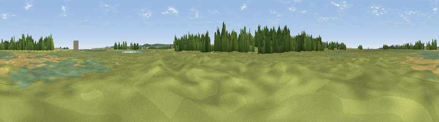

Viewpoint near Oare
#41546 in England · top 81% of its area beats it · near OareThe view, rendered

A 360° render of this exact spot computed from the terrain model, tree cover and land cover — summer colours, afternoon light, calibrated against photographs of famous viewpoints. Real trees, hedges and buildings will differ in detail.
The panorama
Grey silhouette: terrain skyline in each direction (720 bearings, Earth curvature and refraction included). Dashed green: skyline with trees (+15 m) and buildings (+8 m) as obstacles. Blue strip: how far the ground is visible on each bearing.
Where the view opens
Wedge length = distance to the farthest visible ground on that bearing (vegetation-aware). Rings at 10, 25 and 50 km.
What fills the view
57% grassland · 15% woodland · 12% wetland · 12% cropland · 3% water · 1% built-up
Angular shares of the visible panorama (visual magnitude), not map area. Landscape diversity 0.55 (0–1 Shannon).
Key numbers
More beautiful places nearby
The staircase of upgrades: each row has a higher view potential than everything closer. Driving times are estimates from straight-line distance, calibrated against real road routing — check an actual route before setting out.
| Place | Direction | Drive | Score |
|---|---|---|---|
| Viewpoint near Ospringe | SSW · 3 km | ~8 min | 37.3 |
| Viewpoint near Ospringe | SW · 4 km | ~8 min | 48.7 |
| Viewpoint near Eastchurch | NNW · 6 km | ~13 min | 57.0 |
| Viewpoint near Warden | N · 8 km | ~16 min | 58.2 |
| Viewpoint near Minster | NNW · 9 km | ~17 min | 58.8 |
| Viewpoint near Yorkletts | E · 9 km | ~17 min | 60.9 |
| The Mount (Popsy's View) | SSE · 10 km | ~20 min | 61.7 |
| Viewpoint near Charing | SSW · 15 km | ~27 min | 66.6 |
51.34445, 0.88455 · source: osm viewpoint · position refined by local search. Computed location — check access rights before visiting.